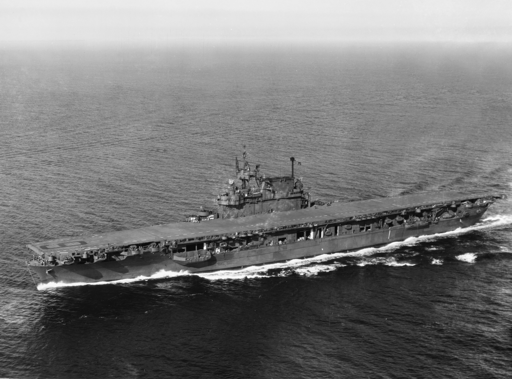
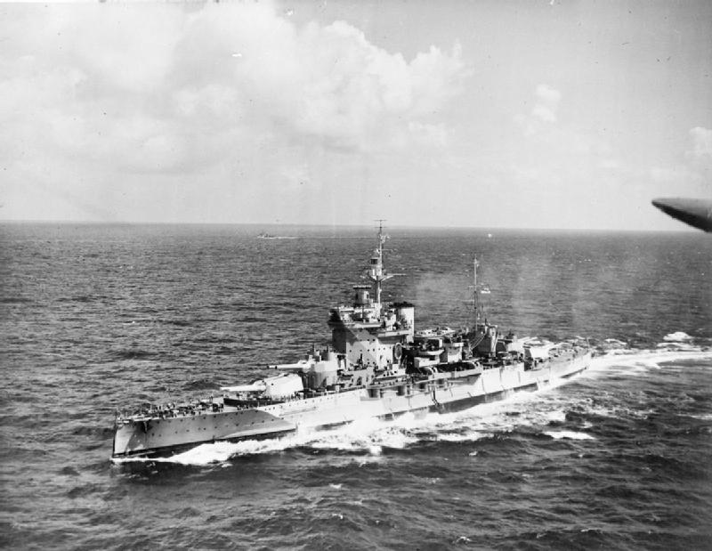
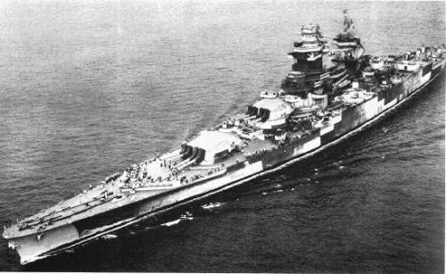
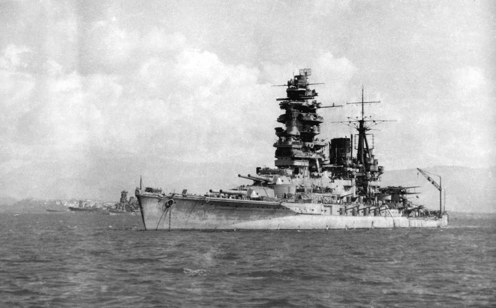
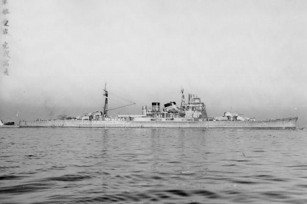

Kapal tempur adalah kapal perang besar berzirah dengan baterai utama yang terdiri
atas meriam berkaliber besar. Kapal tempur lebih besar, dengan persenjataan dan pelindung yang lebih baik,
daripada kapal penjelajah maupun kapal perusak. Sebagai kapal bersenjata terbesar dalam suatu armada,
kapal tempur digunakan sebagai pemegang komando laut dan melambangkan puncak kekuatan laut suatu bangsa
sejak sekitar tahun 1875 hingga Perang Dunia II. Dengan bangkitnya kekuatan udara, peluru kendali,
dan bom kendali, meriam besar tak lagi dianggap perlu untuk memiliki keunggulan kekuatan laut dan
aibatnya kapal tempur pun tak lagi digunakan.
Rancangan kapal tempur berkembang untuk memasukkan dan menyerap kemajuan teknologi untuk menjaga keunggulan.
Kata "kapal tempur" dalam bahasa Inggris, yakni battleship, diciptakan sekitar tahun 1794 dan merupakan
kependekan dari frasa kapal tempur baris, yang merupakan kapal perang dominan selama Zaman Pelayaran.
[1] Istilah ini digunakan secara resmi pada akhir 1880-an untuk menyebut kapal perang berzirah besi,
[2] yang kini oleh para sejarawan disebut sebagai kapal tempur pra-dreadnought . Pada tahun 1906, pembuatan HMS
Dreadnought menunjukkan revolusi dalam rancangan kapal tempur. Rancangan kapal tempur sesudahnya, yang dipengaruhi
oleh HMS Dreadnought, disebut kapal "dreadnought".

USS Enterprise (CV-6) adalah sebuah kapal induk Angkatan Laut Amerika Serikat pada era Perang Dunia Kedua.

HMS Belfast adalah sebuah kapal penjelajah ringan kelas Town (1936) milik Angkatan Laut Britania Raya.

Bismarck adalah kapal tempur terbesar yang pernah dibuat Jerman pada masa Perang Dunia II.

HMS Warspite adalah sebuah kapal dari kapal tempur kelas-Queen Elizabeth yang dibangun Royal Navy.

Richelieu adalah kapal tempur Prancis sekaligus kapal yang memimpin di kelasnya.

Nagato adalah kapal tempur super-dreadnought yang dibuat oleh Jepang pada tahun 1910-an.

Atago adalah sebuah kapal penjelajah berat kedua dalam kelas Takao. Ia aktif dalam Perang Dunia II.

Hiryuu ("Naga Terbang") adalah kapal induk milik Angkatan Laut Kekaisaran Jepang.